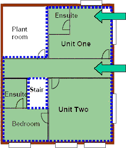
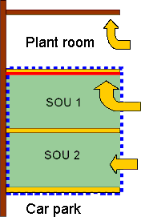
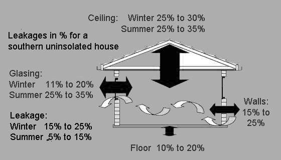
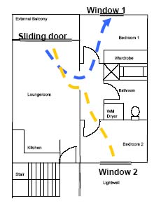

Energy Efficiency
Measurements
BCA Volume 1 & 2
VOLUME ONE:
pertains primarily to Class 2 to 9 buildings.
VOLUME TWO: pertains primarily to Class 1 and 10 buildings
(houses, sheds, carports, etc)
Overview of requirements
Utilise natural ventilation
Turn off systems when not in use
Occupants are responsible for paying energy bills
The aim is to treat
the building fabric to reduce heat gain and heat loss and to reduce the
need for conditioning.
Building envelope or fabric is a term used to describe the roof, walls,
windows, floors and internal walls of a home. The envelope controls
heat gain in summer and heat loss in winter.
Building fabric separating heated or cooled interior spaces from the
exterior of the building or unconditioned spaces i.e. spaces that:
Are habitable rooms
Are conditioned
Can be conditioned
The envelope may comprise internal or external elements
|

|
Sole occupancy unit conditioned: The walls, roof, ceiling and
floor may be part of the building envelope. Includes non-habitable
rooms such as the ensuite.
Corridor: The walls, etc of this area are part of the envelope
where there is conditioning on one side of an element and no conditioning
on the other.
Envelope definition
|
|

|
Plant room ceiling not insulated as the ceiling is not part of
the building envelope
SOU below non-conditioned
space: Ceiling is insulated
as it is part of the envelope
Building envelope: Between conditioned spaces and non- conditioned
spaces
|
Summary
Buildings, both internal & external elements
(part of the building envelope)
like roof and ceilings, roof lights, wall and floor construction. Ensure
that insulation is installed correctly and properly tested. Also make
sure it has the required fire properties.
[top]
Good glazing design contributes to energy efficiency by:
Allowing in natural light
Enhancing solar heat gains in winter
Restricting heat losses through the glazing in winter
Restricting unwanted heat gains in summer or in
hotter climates
Relevant definitions: Glazing , Conductance, U-Value, Solar heat gain,
SHGC, Exposure factor
|
Glazing (BCA):
Conductance:
U-Value (Watts/m².K):
Solar Heat Gain Heating:
SHGC:
Exposure factors (E):
|
“Glazing, for the purposes of Section J, means a
transparent or translucent element and its supporting frame located
in the external fabric of the building.”
heat transferred from a warmer to a colder surface
measures the rate of heat conduction through a material or assembly
for each degree of temperature difference
caused by direct solar radiation,
Solar Heat Gain Coefficient
measure exposure to summertime solar radiation |
Summary
Glazing is assessed separately for each sole-occupancy unit and each
public area.
This Section considers the glazing area in each storey (glazing aggregates
should not exceed each of the BCA allowances)
Calculations can be completed by: Equations or ABCB glazing
calculator
ABCB glazing
calculator
Excel spreadsheet determines the
BCA glazing allowances, aggregate glazing conductance and aggregate
glazing solar heat gain.
Automatically carries out calculations and compares results for compliance
[top]
Applies to rooms with artificial heating and cooling i.e. a BCA defined
conditioned space
Exemptions
Buildings using evaporative coolers inclimate zones 1, 2, 3 and 5 and
for ventilation required for gas appliances

[top]
Reasons for air movement measures is to reduce the use of air-conditioning
by taking advantage of the cooling effect provided by natural cross flow
ventilation, ceiling fans and evaporative coolers.
Reduced use means reduced greenhouse gas emissions!
Ventilation openings - Clause J4.3
|  |
Breeze Path
- Internal doors must have a minimum area of 1.5m²
- Breeze path not greater than 20m
- Openings to bathroom comply withTable J4.2
|
[top]
Reasons for measures
To allow air-conditioning and ventilation systems to use energy
more efficiently
To ensure that inefficient equipment is not chosen
To take a whole-of-building approach rather than a developer
& tenant approach
Scope
Air-conditioning systems
- Including systems that heat,
cool or both
Mechanical ventilation systems Section F4 compliance
- May be part of air-conditioning
system
Heating and cooling systems
- May be part of an air-conditioning
system
- May directly heat or cool a
space
Summary
Introduces BCA requirements
Extensively covers air-conditioning, ventilation, heating and
cooling plant
Requires design and testing documents
Certificates from experts to verify installation
[top]
Relevant definitions
Lamp power density
Calculates amount of lighting power used in a room
(lamp capacity & numbers) and is specified in the BCA.
Maximum value specified is determined by total of lamp Watts divided by
room floor area.
Light source efficacy (effectiveness)
Calculates the energy efficiency of the lamps.
Applies to bathrooms, dressing rooms, etc. Minimum value
specified is determined by luminous flux of the lamps divided by the electric
power ratings (Lumens/Watt).
Summary
Individual switching of lighting
Limit the power that may be used by lighting systems (Capacity
and number of fittings)
Use of occupant activated device for all powered items sole-occupancy units
[top]
A hot water supply system for food preparation and sanitary purposes, other than a solar hot water supply system in climate zones 1, 2 and 3, must be designed and installed in accordance with Section 8 of AS/NZS 3500.4.
Summary
Applies to sanitary and cooking hot water piping systems
Requirements in AS/NZS 3500.4
Exemptions for solar water heaters in climate zones 1, 2 & 3
[top]
Access must be provided to all plant, equipment and components that require
maintenance.
[top]
There are several means by which an approval authority can assess whether a
building solution, complies with the BCA. These are referred to as assessment
methods and include the following:
a.) The use of clause A2.2 of the BCA. This clause allows the following evidence (in
some cases subject to conditions) to be submitted in support of a proposal that a
material, form of construction or design meets a performance requirement.
b.) Another assessment method is referred to as a verification method. Verification methods.
Designers are not restricted to using a listed verification method. Any other method may be used if the approval authority is satisfied that it establishes compliance with the BCA.
[top]
Karl Boing
|